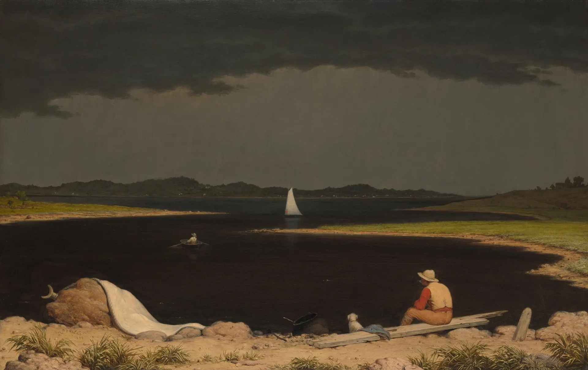
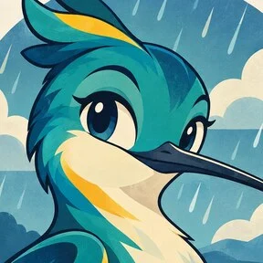
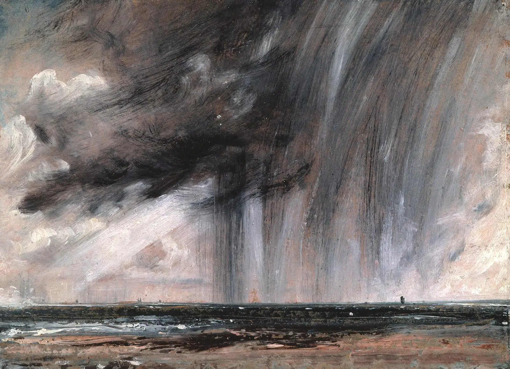
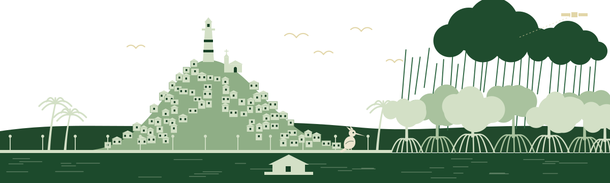
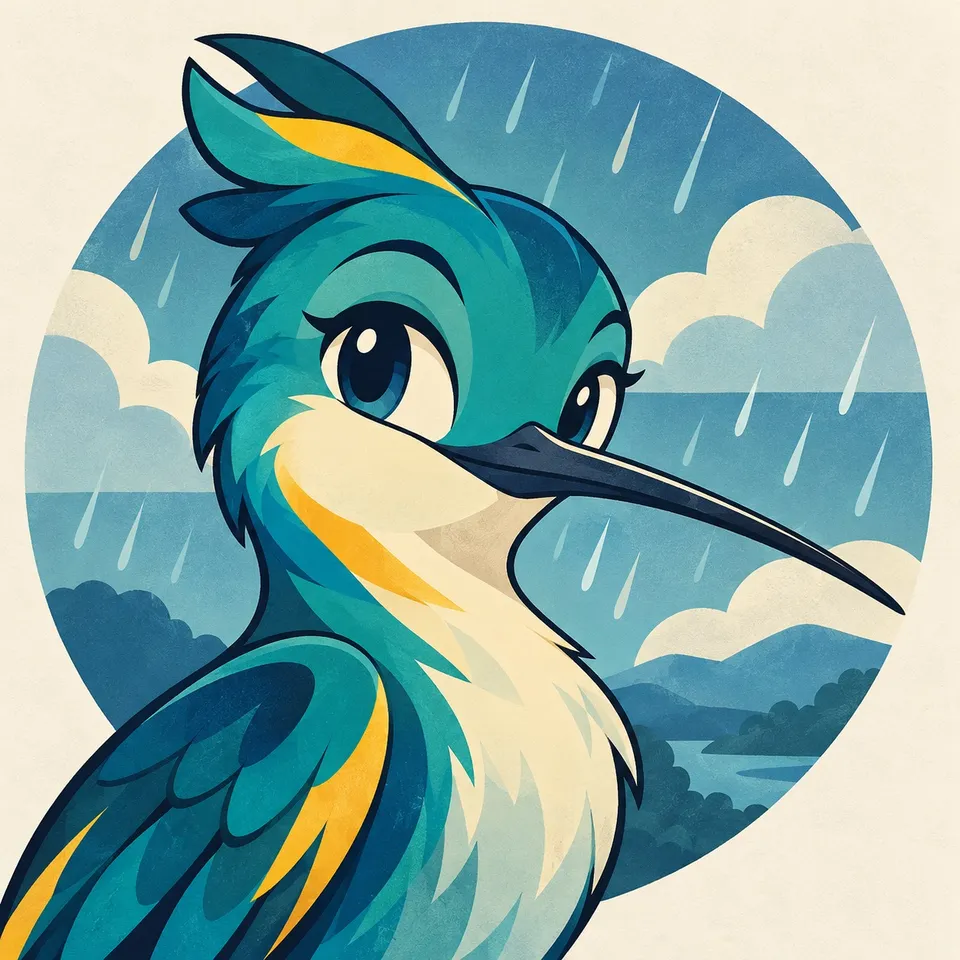
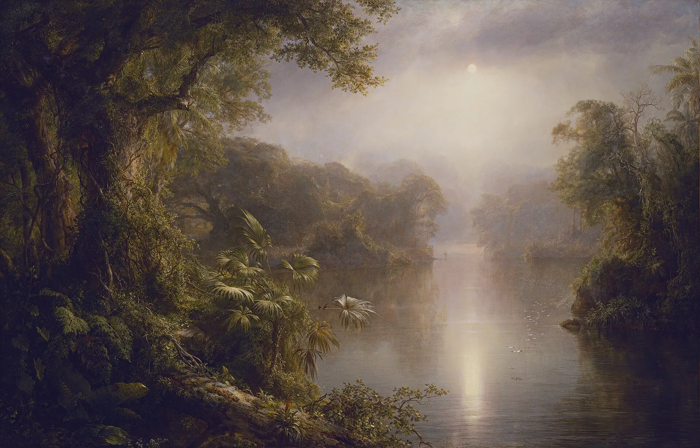
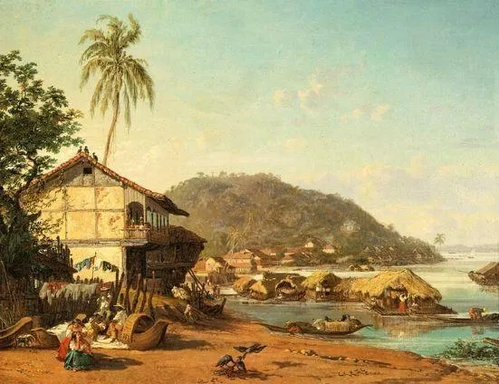
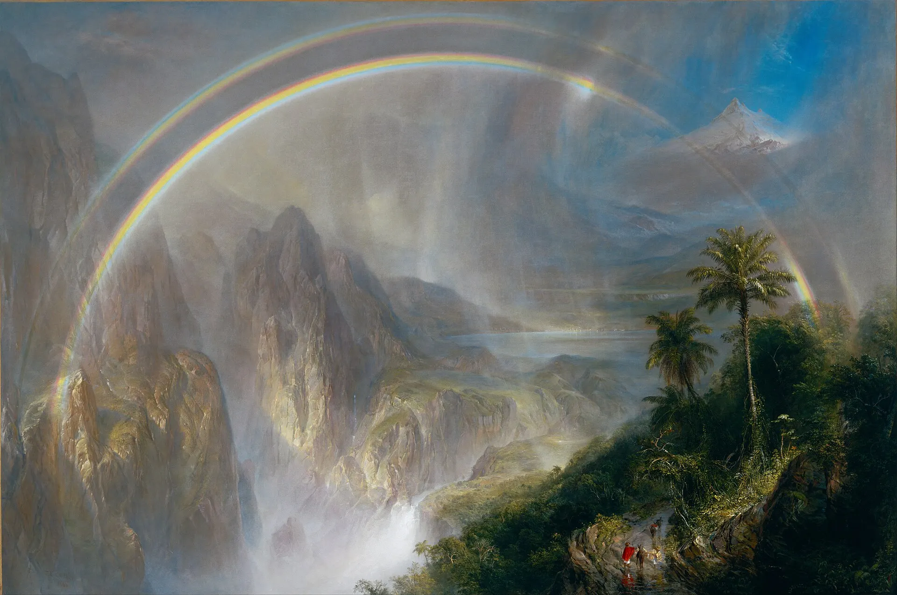

Que el aguacero no te sorprenda
Nuria te dice si tu calle se puede inundar hoy, a qué hora conviene salir y por dónde ir. Hecha para Guayaquil, en el invierno de El Niño 2026.
Probar la appEste invierno llueve como pocas veces. En septiembre y octubre, Guayaquil ya recibió 2 de cada 3 partes de la lluvia de un invierno normal completo. Y la temporada de lluvias, de enero a abril, todavía no empieza.
Nuria mira el cielo, el río y tu calle por ti, y te dice en palabras simples qué hacer y a qué hora.
Te avisa

antesEl Niño 2026
Un invierno que llegó antes y más fuerte
El 23 de octubre, el INAMHI anunció que El Niño entra en su fase más fuerte. Los expertos esperan lluvias muy fuertes por lo menos hasta abril.
En Guayaquil no solo importa cuánto llueve. Cuando el río Guayas está alto, el agua de la calle no tiene por dónde salir.
Ver las cifras
-
2 de 3
partes de la lluvia de un invierno normal ya cayeron en septiembre y octubre: 683,9 mm de 1.055,6 mm.
INAMHI, vía Primicias
-
63 mm
en una sola hora el 26 de octubre, en la estación de la ESPOL. Lo normal para todo octubre son 5 mm.
Primicias
-
≈90
sectores con agua ese mismo día. La marea alta del Guayas llegó a 4,50 m y frenó los desagües.
Segura EP, vía Primicias
-
0
radares de lluvia en toda la costa de Ecuador. Las apps de radar no ven la lluvia de Guayaquil.
Primicias
Cifras publicadas en octubre de 2026 por el INAMHI, Primicias y El Universo.
Lo que nos hace distintos
Donde el radar no llega, Nuria mira el satélite.
La costa de Ecuador no tiene radar de lluvia. Por eso RainViewer, y Amaru, que usa RainViewer, no ven los aguaceros de Guayaquil.
Nuria junta cuatro fuentes que sí funcionan aquí y te las explica en palabras simples.
De dónde salen los datos-
Satélite
Una foto de las nubes cada 10 minutos, del satélite GOES-19. Ves las nubes de tormenta antes de que llueva.
-
Marea del Guayas
Si el río está alto, el agua de la calle se va lento. Nuria lo cruza con la lluvia para darte la mejor hora.
-
Tus vecinos
Reportes con foto de las calles con agua, para saber lo que el pronóstico no ve.
-
Ruta segura
El camino con menos agua hasta donde vas, y la hora en que conviene salir.

Cómo funciona
Cinco pestañas. Una sola pregunta: ¿qué hago y a qué hora?
El riesgo de tu calle, en una gota
- TranquiloNo se espera agua en la calle.
- OjoPuede llover fuerte.
- CuidadoAgua en las calles bajas.
- PeligroRiesgo de inundación.
Más agua en la gota, más riesgo. Cuatro palabras de todos los días, sin números raros.
-
01
Hoy
Lo primero que ves al abrir la app: el riesgo en tu casa, tu trabajo y el colegio, la lluvia hora por hora, la mejor hora para salir y cómo está la marea del Guayas.
-
02
Mapa
Las nubes reales del satélite sobre Guayaquil. Cada barrio con su gota y los reportes de tus vecinos.
-
03
Nuria
Tu asistente. Le preguntas con tus palabras y te responde con los datos de la app, siempre con algo concreto que hacer.
-
04
Ruta segura
Eliges de dónde sales y a dónde vas. Nuria busca el camino con menos agua, rodea las calles inundadas y te dice la mejor hora para salir.
-
05
Familia
Dónde está cada uno, cómo está su zona y si ya confirmó que está bien. Si alguien necesita ayuda, la pide con un botón.
-
Y además
Reportes con foto de tu calle. El modo Peligro, que deja en pantalla solo lo urgente. Y «Así va el invierno», para ver cuánto ha llovido frente a lo normal.

Conoce a Nuria
Pregúntale a Nuria como le preguntarías a un vecino
Nuria es la asistente con inteligencia artificial de la app. Te responde con sus datos: el riesgo de tu barrio, la lluvia, la marea, tu ruta, tu familia y los reportes cercanos.
- Habla simple y va al grano.
- No exagera ni te asusta.
- Siempre te dice qué hacer.
- Si algo es oficial, te manda al INAMHI o a la SNGR.
- Te lee la respuesta en voz alta, si lo prefieres.
- ¿A qué hora salgo del trabajo para llegar a la Alborada?
- Sal antes de las 2 pm. De 2:30 a 4:30 viene lo más fuerte en el norte. Y a las 7:30 el río estará alto, así que el agua de la calle se irá lento.
-
Alborada · CuidadoLluvia muy fuerte de 2:30 a 4:30 pm
- ¿Y mi mamá?
- Ya confirmó que está bien. Su zona, en Urdesa, está en Ojo hasta las 5 pm.
Ruta segura
Llega sin cruzar el agua
Dinos de dónde sales y a dónde vas. Nuria compara los caminos según la lluvia que viene, el río y lo que reportan tus vecinos. Si uno pasa por agua, busca otro que la rodee y te dice a qué hora salir.
Familia
¿Están todos bien?
Mira en el mapa dónde está cada uno y cómo está su zona. Con un toque les preguntas a todos si están bien, y cualquiera puede pedir ayuda.

Los datos
El cielo, el río y tu calle

Guayaquil siempre ha vivido con el río. Por eso Nuria no mira solo la lluvia: también mira la marea.
- NubesSatélite GOES-19 de la NOAA, con imágenes de la NASAEn vivo
- Lluvia hora por horaPronóstico de Open-MeteoEn vivo
- Marea del GuayasPronóstico de marea de Open-MeteoEn vivo
- Calles y caminosOpenStreetMap y OSRMEn vivo
- Terreno, reportes y familiaDatos de ejemplo en esta versión de la appDe ejemplo
Nuria no es una fuente oficial. Sigue los avisos del INAMHI y de la SNGR. En una emergencia, llama al 911.

Pruébala
Lleva a Nuria en tu celular
Nuria funciona en Expo Go, en Android y en iPhone.
- Instala Expo Go desde Play Store o App Store.
- Abre el enlace de Nuria o escanea su código QR.
- Elige tus lugares: casa, trabajo o colegio.